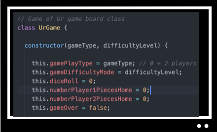

Thank you for visiting my website.
My Skills.

Senior Software Engineer
Worked as a senior software engineer for an autonomous software testing company.
- Engineered and coded new product features as well as performed infrastructure tasks
- Fullstack: server and client code
- Led documentation team
- Mentored new employees
- Languages: C, C++, Python, Typescript, Nix Expression Language
- Other technical skills: Linux, Bash, Nix, Sphinx, Podman, Terraform, Google Cloud Platform, AWS services (such as BigQuery, CloudFront, Route53, Lambda, EC2, S3, DynamoDB), FreeBSD (bhyve), mercurial
Teacher
I have taught math and coding to middle school children from 2009 to 2020.
- Taught Algebra 1, Algebra 2/Trig, Geometry, Coding (Scratch and Python) to middle schoolers at Loudoun County Public Schools
- Created curricula for all courses taught, sharing with team using Trello
- Mentored new teachers
- Created many instructional videos, especially helpful during pandemic closure (example)
- Automated tasks such as grading quizzes and student review using Google G-Suite (example form for right triangle review)
- Engagement: learning should be fun when possible (example video I created combining Disney and math (solution video, too!))
Software Engineer
Prior to teaching, I was a software engineer for many years, primarily in the area of satellite control.
- Grieser Software, LLC: Co-founder; main customer was Sirius Satellite Radio (now SiriusXM), automating satellite operations
- Storm Integration/Storm Control Systems: Supported Inmarsat on-site as well as in our European office in England; in addition to software development, wrote documentation for company flagship product
- IBM - Federal System Division: Developed software for government satellite control system in Gaithersburg, MD and on-site in Sunnyvale, CA; in addition to software development, was a project manager specializing in the integration of software from IBM and other contractors; after this project completed, was a software test lead for an internal software configuration management product
- Fairchild Republic Company: Intern during college in their newly created analytical sciences department; worked with FRC aerospace engineers to turn formulas used in building their aircraft into code programs using FORTRAN
Technical Skills / Other Information
Here are some coding languages, frameworks, and tools I am familiar with, either because I have worked with them professionally or have learned on my own.
- Coding Languages (used professionally): FORTRAN, JOVIAL, C, C++, Python, JavaScript, TypeScript, Visual Basic
- Coding Languages (self-taught): Scratch (elementary features with students), HTML, CSS, Swift
- Applications, Frameworks, Tools: Windows, macOS, iOS, iPadOS, Linux, Unix, NixOS, Terraform, AWS Services (e.g. EC2, S3, Lambda CloudFront), VSCode, Atom, mercurial, JQuery, Bootstrap, Node.js, Express.js, Trello, git, mercurial, Microsoft .NET, Google Cloud Platform, SQL (BigQuery, Sybase), G2, Google G-Suite products, Microsoft Office 365 products, Apple iWork products, Xcode, IBM 370 architecture
- Certifications/Honors: VDOE licensed teacher in Secondary Mathematics, Apple Teacher with Swift Playground recognition, Google Certified Educator Level 1
- Hobbies: Family, reading, walking, knitting/crochet, crossword puzzles, digital photography, Disney parks, cats

Code Sample
Play my version of this ancient game as well as view the code. It was written in JavaScript using Node.js for server processing (determines computer moves).
Education
- Master of Education, Marymount University
- Bachelor of Science Mathematics and Computer Science, State University of New York at Binghamton